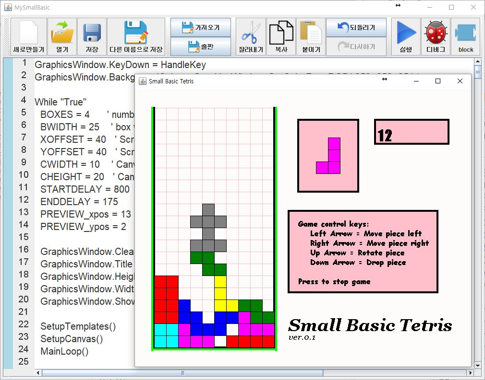

My Small Basic

Overview
My Small Basic is a Java-based implementation for Small Basic Program Development Environment. It provides an interpreter and a set of the standard library for the Small Basic language. It is an open-source software available in GitHub.
Contributors
- Kwanghoon Choi : Designer of Lexer, Parser, Interpreter, Library architecture, and Development environment.
- Gayoung Kim : GraphicWindows, Controls, Mouse, Shapes, and Part of Interpreter, Pretty Printer
- Munyoung Cho : Turtle, Stack, GUI-based IDE
- Seyoung Park : Sound, Array, GUI-based IDE
- Sengwang Jung : File, Dictionary, Network, Flickr
- Jiyoung Kim : Text, Program, Math, ImageList, TextWindow
- Sungmo Cho : Timer, Clock
- Tajin Kim : Lexer and parser
- Youngmin Cho : Lexer and parser
- Bumjun Kim : Collecting basic examples
Any Questions?
- Email : kwanghoon.choiXjnu.ac.kr (where X is @)
Last Updated: June 5th, 2017.